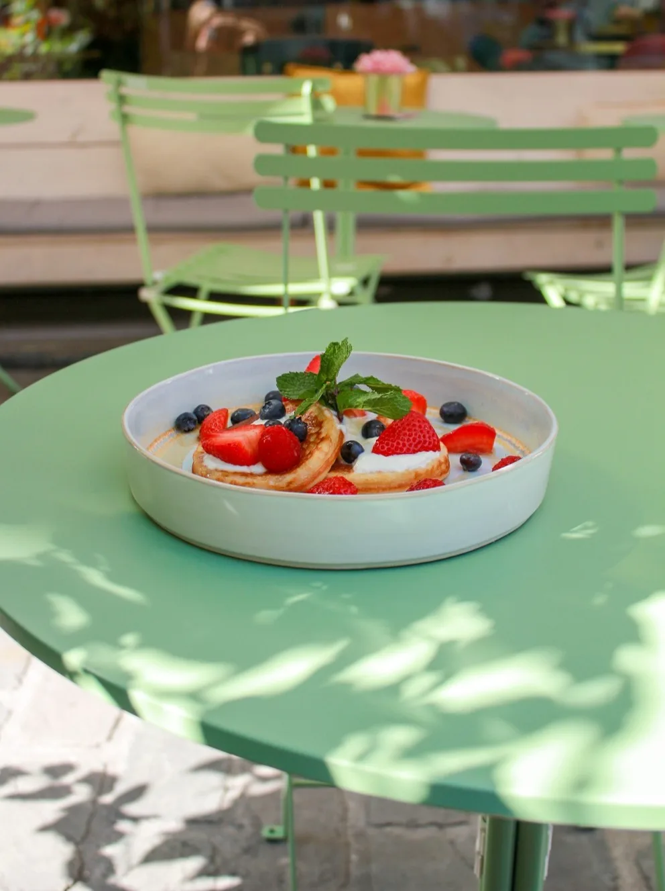
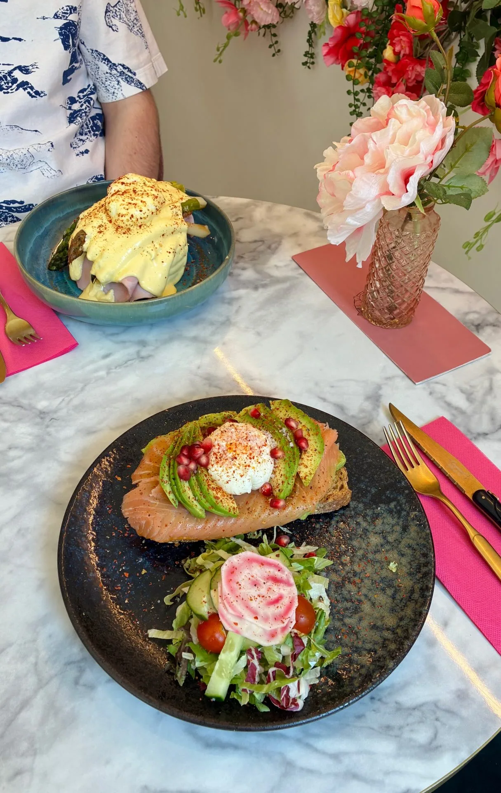
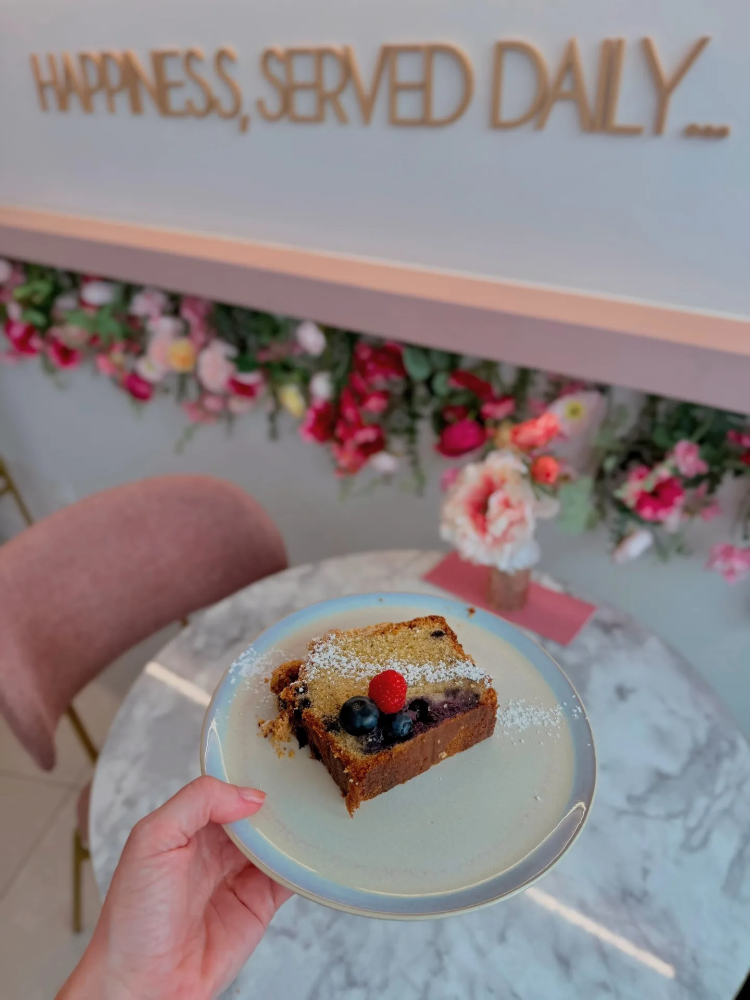
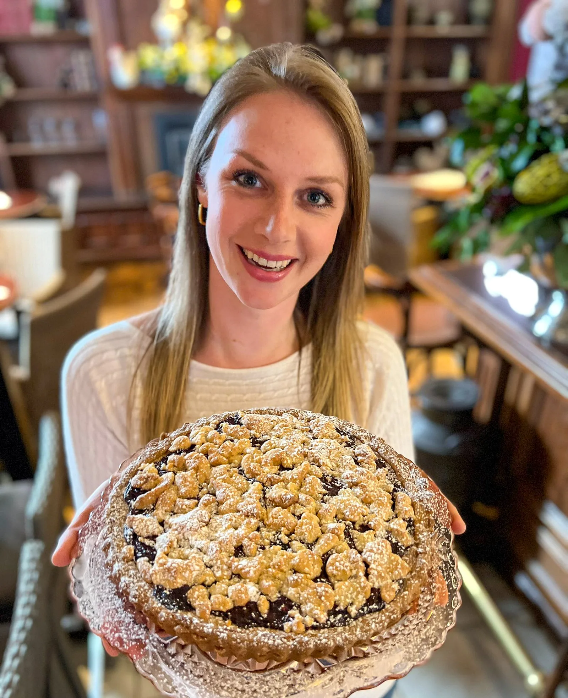
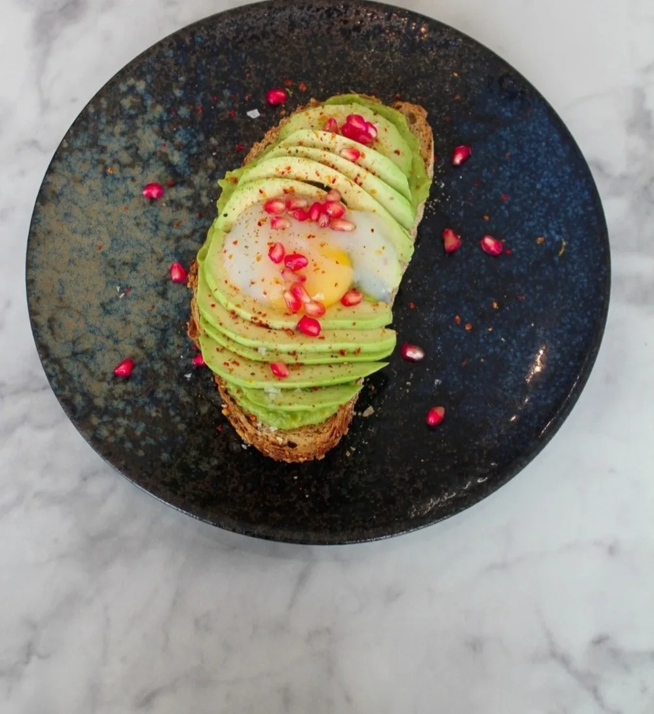
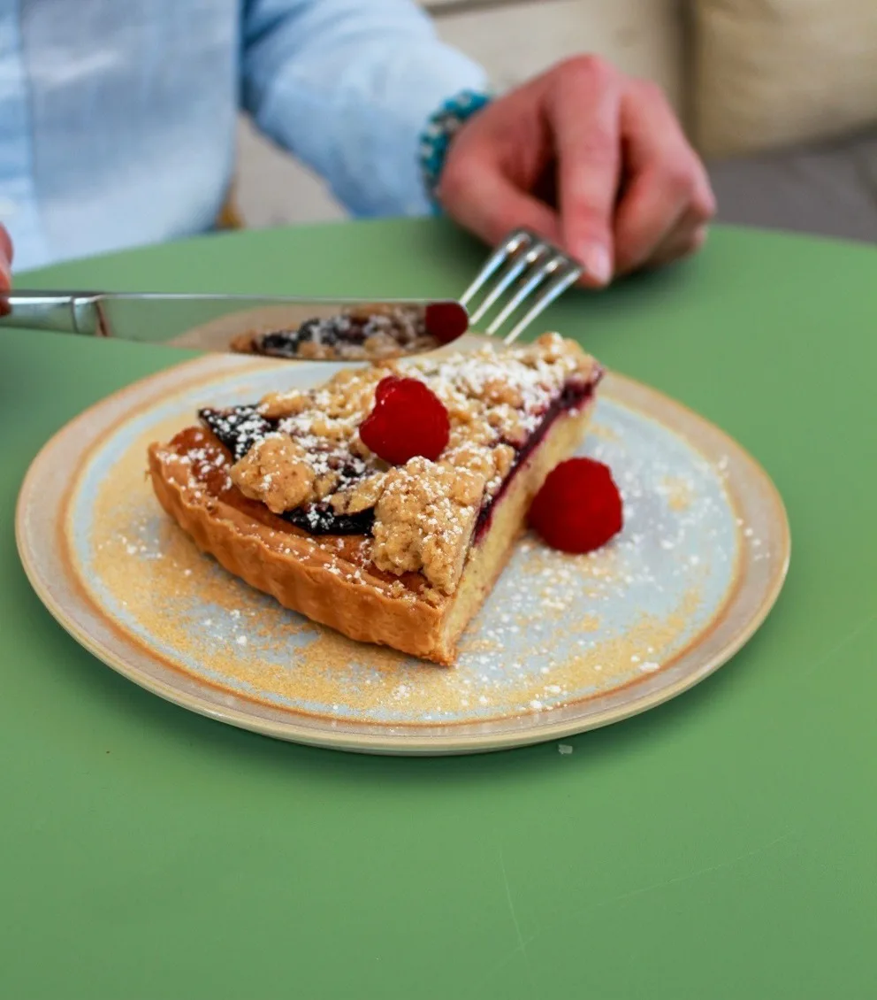
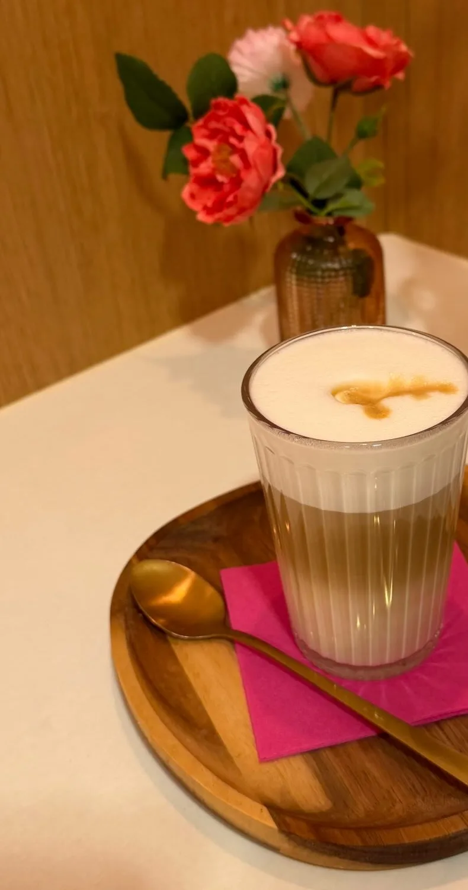
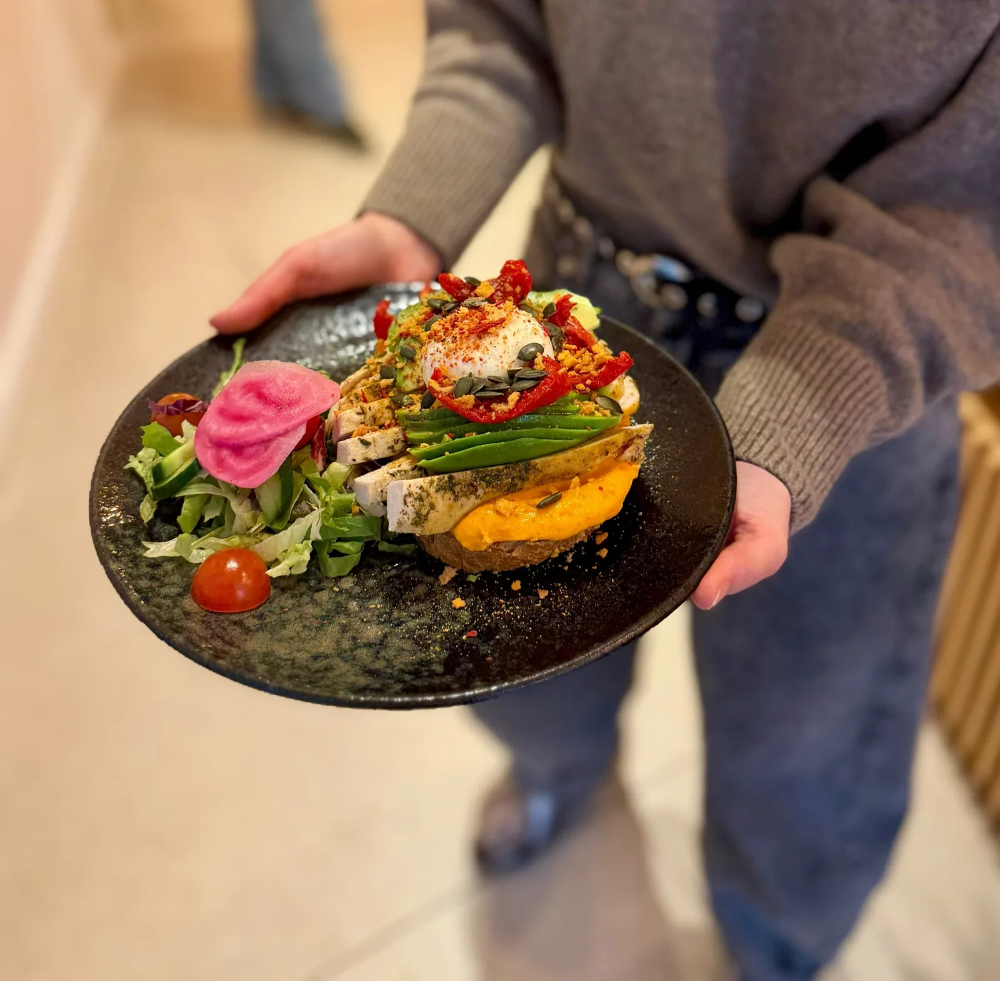

Ontbijt
Vanaf 9 uur
- Eggs BarDaphToast van brioche met gegrilde asperges, een gepocheerd eitje en hollandaise.
- Fluffy pancakesHoog gestapeld, met vers fruit erop.
- Granola bowlVeel vaste klanten nemen er een croissant bij.
Eggs met hollandaise, toast met burrata, fluffy pancakes en elke week een andere taart in de toog. Alles hier is huisgemaakt. Reserveren hoeft niet, je mag gewoon binnenlopen.


Crumblecake voor onze bloemenmuur
Jarenlang legde ik met veel plezier de klanten van Brasserie De Vogelsanck in de watten. In 2022 was het tijd voor mijn eigen droom: een ontbijt- en lunchbar op de Botermarkt, met mijn naam op de gevel.
Bij BarDaph vind je zoete zondes en gezonde opties, voor ieder wat wils. Een granola bowl op dinsdagochtend, een toast met burrata als lunch, of gewoon een koffie met een stuk crumblecake op het terras.
Samen met de BarDaph Squad sta ik elke dag achter de toog. Tot snel!
Ontbijt vanaf 9 uur, lunch tot de keuken om 15 uur sluit. Gebak en drankjes kan je bestellen tot we dichtgaan. De suggesties wisselen met het seizoen.

Vanaf 9 uur

Tot 15 uur

Tot sluiting

De hele dag

De toast burrata stond er maar voor even op. Tot jullie er week na week naar bleven vragen. Burrata, avocado, zoete aardappel en kip, met een frisse salade ernaast.
"Zo'n favoriet dat we hem niet meer van onze suggestiekaart durven halen."BarDaph op Instagram
"Wat een aanrader. Zeer mooie gedresseerde bordjes. En vooral: zeer lekker. Ook de zelfgemaakte limonade is een echte aanrader. Dit gaat zeker ons vast plekje worden in Hasselt."Computer Avonturen op Google
"Op de kaart vind je niet alleen de klassieke gerechten, maar ook originele creaties met hun eigen special touch. Absoluut een aanrader voor wie van smaak en een beetje originaliteit houdt!"Lia Thijsen op Google
"Super leuke brunchbar met lekker eten! Ikzelf nam de Eggs Bar Daph (toast van brioche met gegrilde asperges, gepocheerd eitje en hollandaise saus) en mijn vriendin at een granola bowl met croissant."Céline Lapierre op Google
"Ik ben altijd heel benieuwd hoe de lokale cheesecake smaakt (lees: ik houd van cheesecake), zodoende die ook bestelt. Ik kan u vertellen, die viel niet tegen, echte aanrader!"Henk van de Scheur op Google
We werken liefst zonder reservaties. Zo kan iedereen spontaan langskomen en blijft het ook achter de toog rustig tijdens de drukke middag. Alles volzet? Meestal is er na 5 à 10 minuten een tafeltje vrij.
Reserveren kan, maar hoeft niet. Enkel voor de lunch op zaterdag en in de schoolvakanties nemen we geen reservaties.
De keuken sluit om 15u. Gebak en drankjes kan je bestellen tot sluiting.
In hartje Hasselt, met een terras op het plein. Je herkent ons aan de roze bloemen.
Ik maakte deze demo voor jullie om te tonen wat er kan. Na een kort gesprek maak ik er iets veel persoonlijkers van, helemaal naar jullie wens.
Vrijblijvend. Ik kom langs of we bellen.
Op maat, op jullie eigen domein.
Geen voorschot. Jullie betalen pas als alles klaar is.
Hosting, domeinnaam en kleine wijzigingen, zoals nieuwe openingsuren.
Omdat een voorbeeld meer zegt dan een mail. Zo zien jullie meteen wat er kan, en het kost jullie niets.
Nee. Het gesprek is vrijblijvend. Vinden jullie het niks, dan is het daarmee gedaan.
Na ons gesprek staat jullie site binnen 10 tot 14 dagen online.
Zeker. Jullie domeinnaam kan gewoon blijven, de nieuwe site komt in de plaats van de oude.
Nee, dat doe ik op basis van ons gesprek. Eigen foto's zijn mooi meegenomen, maar niet nodig om te starten.